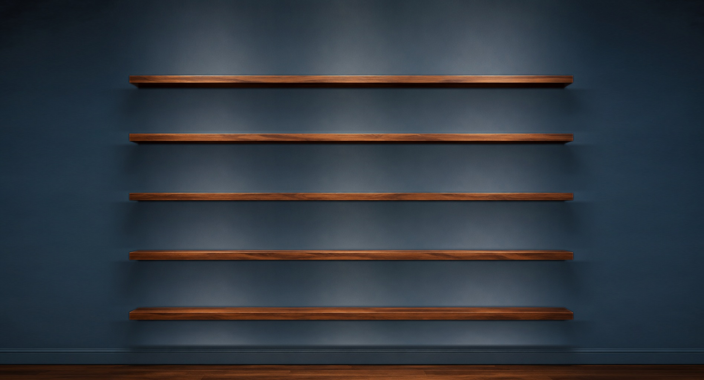

tools and toys for twiddling. no scores, no goals, no timers (except the tools which are timers), no links (except for location accuracy), no likes, no ads, no in-game purchases. nothing exciting, but hopefully something enjoyable. the lack of text and explanations throughout is an intentional choice for universal (if simplistic) communication. the author trusts curiosity and ever-present search engines to suffice where clarity is needed.
sagne has been designed by one person, programming by claude and images by gemini. it is a single individual's attempt to bring to digital life some of the world's more interesting modes and models.